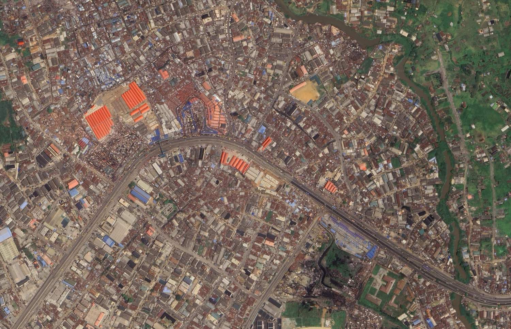
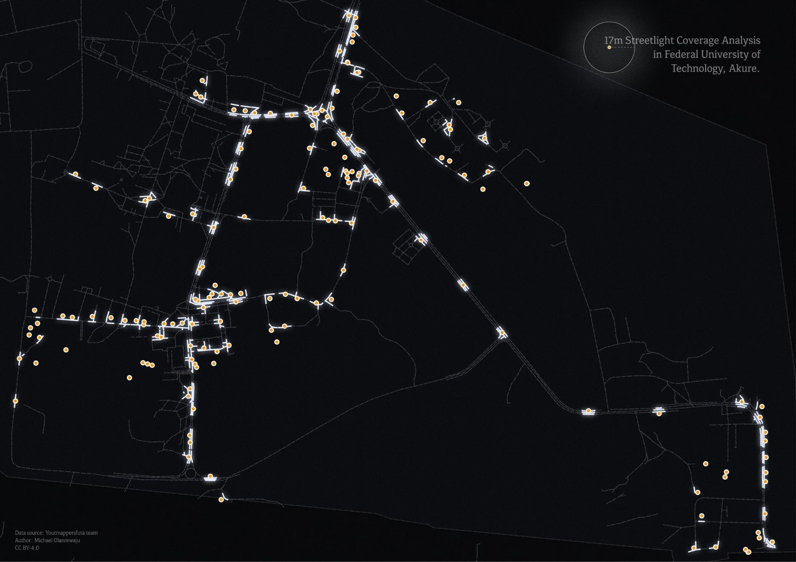

Adaptive design for accessibility: Map of Mile 12 Terminal and FUTA Campus, Nigeria
Responsive map design for mobile and desktop user experiences.
The map design is built to be responsive, ensuring a good user experience on both mobile and desktop devices. The layout adjusts based on the screen size, providing optimal viewing and interaction opportunities for users accessing the map from various devices.
Two maps are presented to showcase the responsive design capabilities across different screen sizes, with a manually coded static map (using a background image + HTML-based overlays) with an HTML coded legend and a map image having two resolutions (one default low res. and a high res. for larger screens) to demonstrate how the map adapts to different screen sizes and resolutions.

 Mile 12 Market
Mile 12 Market
 Pedestrian Bridge
Pedestrian Bridge
 Mile 12 Terminal
Mile 12 Terminal
 Mile 12 Market
Mile 12 Market
 Bus Terminal
Bus Terminal
 Pedestrian Bridge
Pedestrian Bridge
Why the Project
Streetlight mapping was therefore used as a practical tool to identify black and light zones across the campus. The project aimed to assess and categorise streetlights based on their working condition and power source, identify clusters of damaged or non-functional streetlights for targeted maintenance, locate old streetlight removals for better organisation along roads, and map dark regions on campus, especially road networks. It also sought to provide university authorities with a decision map showing areas that require urgent repairs and upgrades.

Final Notes
Overall the website successfully implemented a responsive design that ensures optimal viewing experience across different devices and screen sizes. Below are some key features implemented:
-
Responsive Overlays
Used percentage-based absolute positioning and CSS transforms to ensure static map markers remain geographically accurate on all screen sizes.
-
Custom Iconography
Designed and implemented three distinct custom icon sets for various infrastructure types (Transit, Pedestrian, Market). Icon size are adjusted for different screen sizes.
-
Interactive Feedback
Integrated CSS hover effects on markers and centered the map view to the location of the area of interest.
-
Legend Repositioning
The map legend moves from bottom-left on desktop to top-right on mobile so it never overlaps key map features at small screen widths.
-
Responsive Images with srcset
Both map images use
srcsetwith pixel density descriptors (1x/2x), so standard screens load the lighter image while high-DPI and Retina screens automatically receive the high-resolution version. -
Full-Width Nav Tap Targets
Navigation links expand to full container width on mobile for easy thumb access on small touchscreens.
Credits
Source: YouthMappersFUTA | Design: Michael Olanrewaju | CC BY 4.0